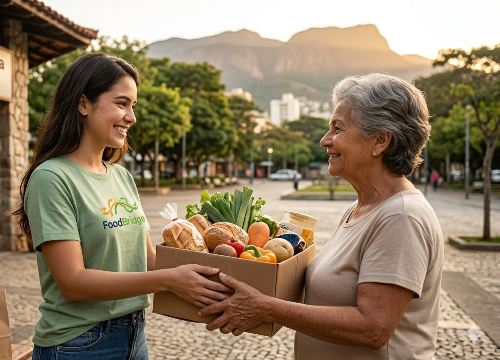
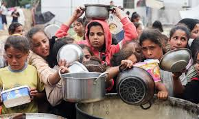
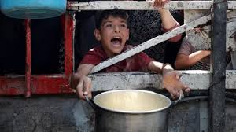
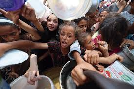

Quem Somos
FoodBridge é uma plataforma digital inovadora que conecta estabelecimentos alimentares com pessoas em situação de insegurança alimentar, criando uma ponte simples e eficaz entre quem tem alimento disponível e quem precisa dele.
Somos uma iniciativa de estudantes e desenvolvedores comprometidos com a Meta 2.1 da ODS 2 da ONU — Fome Zero e Agricultura Sustentável. Nossa missão é eliminar o paradoxo de ter alimentos sendo desperdiçados enquanto milhões passam fome, tornando o processo de doação e coleta prático, acessível e dignificante para ambos os lados.

Nossa Proposta
No Brasil, mais de 33 milhões de pessoas enfrentam fome, enquanto cerca de 30% de tudo que é produzido é desperdiçado ao longo da cadeia alimentar. Este desperdício é especialmente grave no varejo, onde supermercados, padarias, restaurantes e lanchonetes descartam diariamente alimentos ainda em condições seguras de consumo.
O FoodBridge resolve esse paradoxo criando um canal acessível e eficiente que conecta estabelecimentos doadores a pessoas que precisam. Nossa plataforma permite que os estabelecimentos registrem suas doações de forma simples, e que pessoas em situação de vulnerabilidade encontrem alimentos próximos à sua localização de forma rápida e prática.
Com foco em acessibilidade e praticidade, o FoodBridge combate o desperdício alimentar, amplia o acesso à alimentação nutritiva e promove dignidade alimentar através da tecnologia.



Parceiros
Objetivos
Reduzir o Desperdício
Combater o desperdício de alimentos no varejo, aproveitando alimentos ainda em condições seguras de consumo que seriam descartados.
Ampliar o Acesso
Aumentar o acesso à alimentação para pessoas em situação de vulnerabilidade, criando um canal prático e acessível para buscar alimentos.
ODS 2 - Fome Zero
Contribuir diretamente com a Meta 2.1 da ODS 2 da ONU, garantindo o acesso de todas as pessoas a alimentos seguros e nutritivos.
Dignidade Alimentar
Promover dignidade alimentar e responsabilidade social, criando uma ponte eficiente e de baixo custo entre o excesso e a necessidade.